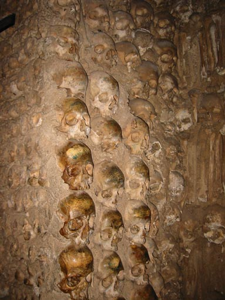
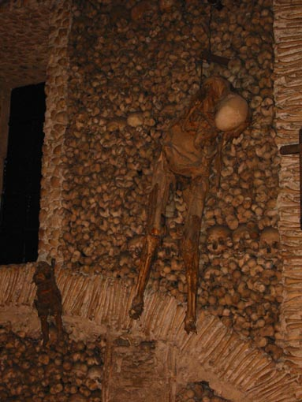
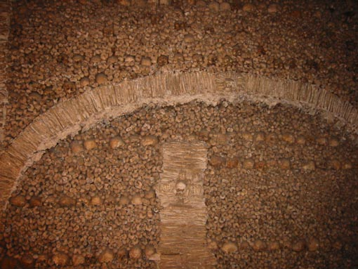

  
Mraèna kapela v mestu Evora, Capela dos Ossos. Stene in stebri kapele so popolnoma prekriti z lobanjami, stegnjenicami in golenicami pribli¾no 5000 menihov pokopanih na samostanjskem pokopali¹èu. Dve celi trupli, odraslega èloveka in otroka, sta obe¹eni pri vhodu in napisom "Nos ossos que aqvi estamos, pelos vossos esperamos" (te kosti tukaj smo mi, in va¹e prièakujemo).